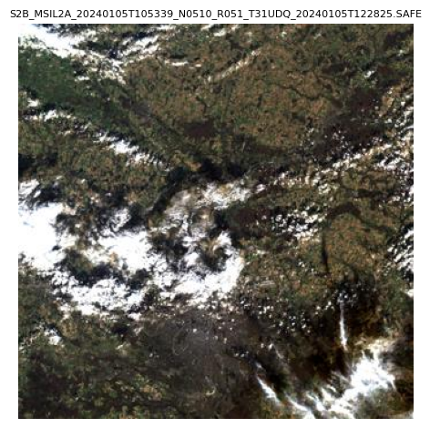
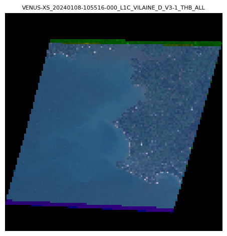
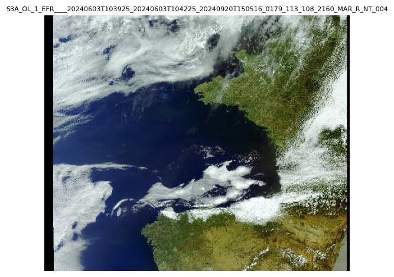
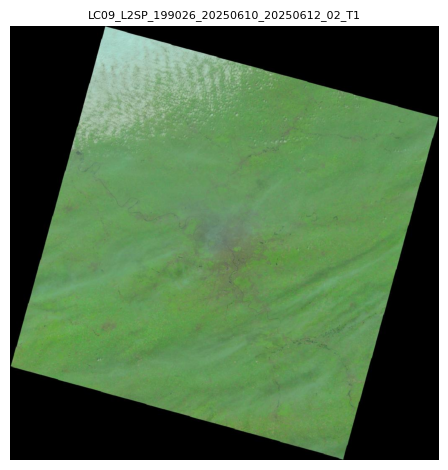

Download Products
SAND provides three ways to retrieve product data from any provider:
- Acquisition — Download the full product archive, then read it as an
xarray.Datasetusingeoread. - Quicklook — Download a preview thumbnail image for visual inspection.
- Metadata — Retrieve the full product metadata as a Python dictionary.
This guide demonstrates each operation using a representative product from every provider.
Copernicus Data Space (DownloadCDSE)
This example demonstrates the workflow for a MSI (MultiSpectral Instrument) product from the Copernicus Data Space. The query searches for Sentinel-2 Level 2A acquisitions over Paris, France, with less than 30% cloud cover.
The cell below returns a SandProduct representing the first matching acquisition. Its string summary shows the product ID, acquisition date, and geographic footprint.
from sand.copernicus_dataspace import DownloadCDSE
from sand.constraint import Time, Geo
dl = DownloadCDSE(verbose=False)
results = dl.query(
collection_sand="SENTINEL-2-MSI",
level=2,
time=Time("2024-01-01", "2024-01-10"),
geo=Geo.Point(lat=48.8566, lon=2.3522),
cloudcover_thres=30,
)
product = results[0]Acquisition
The cell below downloads the full Sentinel-2 archive (a ZIP file) and opens it with eoread. The output is an xarray.Dataset that displays the spatial dimensions, band coordinates, and all data variables (reflectance bands, masks, etc.) ready for analysis.
from eoread.msi import Level1_MSI
archive_path = dl.download(product, out_dir / "cdse")
ds = Level1_MSI(archive_path, verbose=False)<xarray.Dataset> Size: 335MB
Dimensions: (tie_rows: 23, tie_columns: 23, bands: 13, y: 1830, x: 1830)
Coordinates:
* tie_rows (tie_rows) int32 92B 0 83 166 249 332 ... 1579 1662 1745 1829
* tie_columns (tie_columns) int32 92B 0 83 166 249 ... 1579 1662 1745 1829
* bands (bands) <U3 156B 'B1' 'B2' 'B3' 'B4' ... 'B9' 'B10' 'B11' 'B12'
bands_group (bands) <U9 468B 'bands_60m' 'bands_10m' ... 'bands_20m'
* y (y) int64 15kB 0 1 2 3 4 5 6 ... 1824 1825 1826 1827 1828 1829
* x (x) int64 15kB 0 1 2 3 4 5 6 ... 1824 1825 1826 1827 1828 1829
Data variables:
Rtoa (bands, y, x) float32 174MB dask.array<chunksize=(1, 457, 457), meta=np.ndarray>
longitude (y, x) float64 27MB dask.array<chunksize=(457, 457), meta=np.ndarray>
latitude (y, x) float64 27MB dask.array<chunksize=(457, 457), meta=np.ndarray>
sza_tie (tie_rows, tie_columns) float32 2kB 73.56 73.55 ... 72.37 72.36
sza (y, x) float64 27MB dask.array<chunksize=(457, 457), meta=np.ndarray>
saa_tie (tie_rows, tie_columns) float32 2kB 165.3 165.3 ... 166.6 166.7
saa (y, x) float64 27MB dask.array<chunksize=(457, 457), meta=np.ndarray>
vza_tie (tie_rows, tie_columns) float32 2kB 9.868 9.491 ... 2.176 2.346
vza (y, x) float64 27MB dask.array<chunksize=(457, 457), meta=np.ndarray>
vaa_tie (tie_rows, tie_columns) float32 2kB 94.08 93.81 ... 217.1 226.1
vaa (y, x) float64 27MB dask.array<chunksize=(457, 457), meta=np.ndarray>
cwav (bands) float64 104B 442.3 492.3 559.0 ... 1.61e+03 2.186e+03
Attributes: (12/14)
totalheight: 1830
totalwidth: 1830
datetime: 2024-01-05T10:57:28.322388Z
platform: Sentinel-2B
resolution: 60
sensor: MSI
... ...
user_guide: https://sentinels.copernicus.eu/documents/247904/68521...
metadata_granule: {'attributes': {'{http://www.w3.org/2001/XMLSchema-ins...
metadata: {'attributes': {'{http://www.w3.org/2001/XMLSchema-ins...
_flag_reader: eoread.msi.FlagsReader_MSI
_srf_getter: eotools.srf.get_SRF_eumetsat
_srf_getter_arg: sentinel2_2_msiQuicklook
The cell below downloads the product’s embedded thumbnail and renders it. The output is a true-color preview image, useful for visually confirming the scene quality before downloading the full acquisition.
from PIL import Image
from tempfile import TemporaryDirectory
import matplotlib.pyplot as plt
with TemporaryDirectory() as tmpdir:
ql_path = dl.quicklook(product, tmpdir)
img = Image.open(ql_path)
plt.figure()
plt.title(ql_path.stem, fontdict={'fontsize': 8})
plt.imshow(img)
plt.axis("off")
plt.tight_layout()
plt.show()
Metadata
The cell below retrieves the complete product metadata as a Python dictionary. The output shows a selection of key fields such as the product ID, title, acquisition timestamp, and cloud cover percentage.
meta = dl.metadata(product)CNES Geodes (DownloadCNES)
This example demonstrates the workflow for a VENUS (Véhicule d’Expérimentation pour le Nouveau Système) product from CNES Geodes. The query searches for Level 2 VENUS acquisitions over Paris, France.
The cell below returns a SandProduct representing the first matching acquisition. Its string summary shows the product ID, acquisition date, and geographic footprint.
from sand.cnes import DownloadCNES
dl = DownloadCNES(verbose=False)
results = dl.query(
collection_sand="VENUS",
level=1,
time=Time("2024-01-01", "2025-01-01"),
geo=Geo.Tile(venus='VILAINE'),
)
product = results[0]Acquisition
The cell below downloads the full VENUS product archive and opens it with eoread. The output is an xarray.Dataset that displays the spatial dimensions, spectral bands, and all data variables (reflectance, atmospheric corrections, etc.) ready for analysis.
from eoread.venus import Level_VENUS
archive_path = dl.download(product, out_dir / "cnes")
ds = Level_VENUS(archive_path, verbose=False)<xarray.Dataset> Size: 25GB
Dimensions: (bands: 12, bands_angle: 4, x_tie: 27, y_tie: 24, y: 11400,
x: 12781)
Coordinates:
* bands (bands) <U3 144B 'B1' 'B2' 'B3' 'B4' ... 'B9' 'B10' 'B11' 'B12'
bands_group (bands) <U10 480B 'bands_vnir' 'bands_vnir' ... 'bands_vnir'
* bands_angle (bands_angle) int64 32B 1 2 3 4
* x_tie (x_tie) float64 216B 5.091e+05 5.111e+05 ... 5.611e+05
* y_tie (y_tie) float64 192B 5.269e+06 5.267e+06 ... 5.223e+06
* y (y) int64 91kB 0 1 2 3 4 5 ... 11395 11396 11397 11398 11399
* x (x) int64 102kB 0 1 2 3 4 5 ... 12776 12777 12778 12779 12780
Data variables:
cwav (bands) int64 96B 424 447 492 555 620 ... 702 741 782 861 909
SOL_ALL (bands_angle, y_tie, x_tie) float32 10kB dask.array<chunksize=(4, 24, 27), meta=np.ndarray>
VIE_ALL (bands_angle, y_tie, x_tie) float32 10kB dask.array<chunksize=(4, 24, 27), meta=np.ndarray>
Rtoa (bands, y, x) float32 7GB dask.array<chunksize=(1, 500, 500), meta=np.ndarray>
longitude (y, x) float64 1GB dask.array<chunksize=(500, 500), meta=np.ndarray>
latitude (y, x) float64 1GB dask.array<chunksize=(500, 500), meta=np.ndarray>
CLA_ALL (y, x) float32 583MB dask.array<chunksize=(500, 500), meta=np.ndarray>
CLD_XS (y, x) float32 583MB dask.array<chunksize=(500, 500), meta=np.ndarray>
USI_XS (y, x) float32 583MB dask.array<chunksize=(500, 500), meta=np.ndarray>
PIX (bands, y, x) float32 7GB dask.array<chunksize=(1, 500, 500), meta=np.ndarray>
SAT (bands, y, x) float32 7GB dask.array<chunksize=(1, 500, 500), meta=np.ndarray>
Attributes: (12/14)
totalheight: 11400
totalwidth: 12781
datetime: 2024-01-08T10:55:16.000
platform: VENUS
resolution: 4
sensor: VENUS
... ...
metadata_granule: {'attributes': {'{http://www.w3.org/2001/XMLSchema-ins...
metadata: {'attributes': {'{http://www.w3.org/2001/XMLSchema-ins...
user_guide: https://www.cesbio.cnrs.fr/multitemp/ven%c2%b5s-produc...
_flag_reader: eoread.venus.FlagsReader_VENUS
_srf_getter: eoread.venus.get_SRF
_srf_getter_arg: NoneQuicklook
The cell below downloads the product’s embedded thumbnail and renders it. The output is a true-color preview image, useful for visually confirming the scene quality before downloading the full acquisition.
from PIL import Image
from tempfile import TemporaryDirectory
import matplotlib.pyplot as plt
with TemporaryDirectory() as tmpdir:
ql_path = dl.quicklook(product, tmpdir)
img = Image.open(ql_path)
plt.figure()
plt.title(ql_path.stem, fontdict={'fontsize': 8})
plt.imshow(img)
plt.axis("off")
plt.tight_layout()
plt.show()
Metadata
The cell below retrieves the complete product metadata as a Python dictionary. The output shows key fields such as the product ID, geometry (footprint), and properties (acquisition parameters, sensor settings, etc.).
meta = dl.metadata(product)EUMETSAT Data Store (DownloadEumDAC)
This example demonstrates the workflow for an OLCI (Ocean and Land Colour Instrument) product from the EUMETSAT Data Store. The query searches for Sentinel-3 Level 2 acquisitions over Paris, France.
The cell below returns a SandProduct representing the first matching acquisition. Its string summary shows the product ID, acquisition date, and geographic footprint.
from sand.eumdac import DownloadEumDAC
dl = DownloadEumDAC(verbose=False)
results = dl.query(
collection_sand="SENTINEL-3-OLCI-FR",
level=1,
time=Time("2024-06-01", "2024-06-10"),
geo=Geo.Point(lat=48.8566, lon=2.3522),
)
product = results[0]Acquisition
The cell below downloads the full Sentinel-3 OLCI product archive and opens it with eoread. The output is an xarray.Dataset that displays the spatial dimensions, spectral bands, and all data variables (reflectance, temperature, quality flags, etc.) ready for analysis.
from eoread.olci import Level1_OLCI
archive_path = dl.download(product, out_dir / "eumdac")
ds = Level1_OLCI(archive_path, verbose=False)<xarray.Dataset> Size: 10GB
Dimensions: (bands: 21, y: 4091, x: 4865,
tie_columns: 77, tie_rows: 4091,
detectors: 3700)
Coordinates:
* bands (bands) <U4 336B 'Oa01' 'Oa02' ... 'Oa21'
bands_group (bands) <U10 840B dask.array<chunksize=(1,), meta=np.ndarray>
* y (y) int64 33kB 0 1 2 3 ... 4088 4089 4090
* x (x) int64 39kB 0 1 2 3 ... 4862 4863 4864
* tie_columns (tie_columns) int64 616B 0 64 ... 4800 4864
* tie_rows (tie_rows) int64 33kB 0 1 2 ... 4089 4090
Dimensions without coordinates: detectors
Data variables: (12/31)
cwav (bands) float64 168B dask.array<chunksize=(1,), meta=np.ndarray>
Ltoa (bands, y, x) float32 2GB dask.array<chunksize=(1, 500, 500), meta=np.ndarray>
altitude (y, x) float32 80MB dask.array<chunksize=(500, 500), meta=np.ndarray>
latitude (y, x) float32 80MB dask.array<chunksize=(500, 500), meta=np.ndarray>
longitude (y, x) float32 80MB dask.array<chunksize=(500, 500), meta=np.ndarray>
sza (y, x) float64 159MB dask.array<chunksize=(500, 500), meta=np.ndarray>
... ...
lambda0 (bands, detectors) float32 311kB dask.array<chunksize=(1, 3700), meta=np.ndarray>
solar_flux (bands, detectors) float32 311kB dask.array<chunksize=(1, 3700), meta=np.ndarray>
quality_flags (y, x) uint32 80MB dask.array<chunksize=(500, 500), meta=np.ndarray>
wav (bands, y, x) float32 2GB dask.array<chunksize=(1, 500, 500), meta=np.ndarray>
F0 (bands, y, x) float32 2GB dask.array<chunksize=(1, 500, 500), meta=np.ndarray>
Rtoa (bands, y, x) float64 3GB dask.array<chunksize=(1, 500, 500), meta=np.ndarray>
Attributes:
metadata: {'attributes': {'version': 'esa/safe/sentinel/sentinel-...
footprint_lat: (41.9714, 41.8936, 41.8118, 41.7241, 41.6322, 41.5321, ...
footprint_lon: (-2.45334, -1.61412, -0.794523, 0.023626, 0.847814, 1.6...
datetime: 2024-06-01T09:52:17.556382+00:00
platform: Sentinel-3A
resolution: 500
sensor: OLCI
product_name: S3A_OL_1_EFR____20240601T095048_20240601T095348_2024092...
input_directory: tmpdir/S3A_OL_1_EFR____20240601T095048_20240601T095348_...
_flag_reader: eoread.olci.FlagsReader_OLCI
_srf_getter: eotools.srf.get_SRF_olci
_srf_getter_arg: sentinel3_1_olciQuicklook
The cell below downloads the product’s embedded thumbnail and renders it. The output is a true-color preview image, useful for visually confirming the scene quality before downloading the full acquisition.
from PIL import Image
from tempfile import TemporaryDirectory
import matplotlib.pyplot as plt
with TemporaryDirectory() as tmpdir:
ql_path = dl.quicklook(product, tmpdir)
img = Image.open(ql_path)
plt.figure()
plt.title(ql_path.stem, fontdict={'fontsize': 8})
plt.imshow(img)
plt.axis("off")
plt.tight_layout()
plt.show()
Metadata
The cell below retrieves the complete product metadata as a Python dictionary. The output shows a selection of key fields such as the product ID, title, acquisition timestamp, and processing level.
meta = dl.metadata(product)
{key: meta[key] for key in list(meta.keys())[:8]}NASA Earthdata (DownloadNASA)
This example demonstrates the workflow for an OLI (Operational Land Imager) product from NASA Earthdata. The query searches for Landsat-8 Level 2 surface reflectance acquisitions over Paris, France, with less than 20% cloud cover.
The cell below returns a SandProduct representing the first matching acquisition. Its string summary shows the product ID, acquisition date, and geographic footprint.
from sand.nasa import DownloadNASA
dl = DownloadNASA(verbose=False)
results = dl.query(
collection_sand="ISS-ECOSTRESS",
level=1,
time=Time("2024-07-01", "2024-08-10"),
geo=Geo.Point(lat=48.8566, lon=2.3522),
)
product = results[0]Acquisition
The cell below downloads the full Landsat-8 product archive and opens it with eoread. The output is an xarray.Dataset that displays the spatial dimensions, spectral bands, and all data variables (surface reflectance, thermal bands, pixel quality, etc.) ready for analysis.
from eoread.landsat8_oli import Level_L8_OLI
archive_path = dl.download(product, out_dir / "nasa")
ds = Level_L8_OLI(archive_path, verbose=False)Quicklook
The cell below downloads the product’s embedded thumbnail and renders it. The output is a true-color preview image, useful for visually confirming the scene quality before downloading the full acquisition.
from PIL import Image
from tempfile import TemporaryDirectory
import matplotlib.pyplot as plt
with TemporaryDirectory() as tmpdir:
ql_path = dl.quicklook(product, tmpdir)
img = Image.open(ql_path)
plt.figure()
plt.title(ql_path.stem, fontdict={'fontsize': 8})
plt.imshow(img)
plt.axis("off")
plt.tight_layout()
plt.show()Metadata
The cell below retrieves the complete product metadata as a Python dictionary. The output shows key fields such as the product ID, title, summary description, and the URLs to access the product assets.
meta = dl.metadata(product)
{key: meta[key] for key in list(meta.keys())[:8]}USGS (DownloadUSGS)
This example demonstrates the workflow for an OLI (Operational Land Imager) product from USGS. The query searches for Landsat-9 Level 1 surface reflectance acquisitions over Paris, France, with less than 20% cloud cover.
The cell below returns a SandProduct representing the first matching acquisition. Its string summary shows the product ID, acquisition date, and geographic footprint.
from sand.usgs import DownloadUSGS
dl = DownloadUSGS(verbose=False)
results = dl.query(
collection_sand="LANDSAT-9-OLI",
level=1,
time=Time("2024-06-01", "2025-06-10"),
geo=Geo.Point(lat=48.8566, lon=2.3522),
cloudcover_thres=20,
)
product = results[0]Acquisition
The cell below downloads the full Landsat-9 product archive and opens it with eoread. The output is an xarray.Dataset that displays the spatial dimensions, spectral bands, and all data variables (surface reflectance, thermal bands, pixel quality, etc.) ready for analysis.
from eoread.landsat9_oli import Level_L9_OLI
archive_path = dl.download(product, out_dir / "usgs")
ds = Level_L9_OLI(archive_path, verbose=False)<xarray.Dataset> Size: 11GB
Dimensions: (y: 7911, x: 7821, x_pan: 15821, y_pan: 15641, bands: 10)
Coordinates:
* y (y) int64 63kB 0 1 2 3 4 5 6 ... 7905 7906 7907 7908 7909 7910
* x (x) int64 63kB 0 1 2 3 4 5 6 ... 7815 7816 7817 7818 7819 7820
* bands (bands) <U2 80B '1' '2' '3' '4' '5' '6' '7' '9' '10' '11'
bands_group (bands) <U10 400B 'bands_vnir' 'bands_vnir' ... 'bands_ir'
Dimensions without coordinates: x_pan, y_pan
Data variables: (12/13)
saa (y, x) float32 247MB dask.array<chunksize=(500, 500), meta=np.ndarray>
sza (y, x) float32 247MB dask.array<chunksize=(500, 500), meta=np.ndarray>
vaa (y, x) float32 247MB dask.array<chunksize=(500, 500), meta=np.ndarray>
vza (y, x) float32 247MB dask.array<chunksize=(500, 500), meta=np.ndarray>
QA_RADSAT (y, x) float32 247MB dask.array<chunksize=(500, 500), meta=np.ndarray>
QA_PIXEL (y, x) float32 247MB dask.array<chunksize=(500, 500), meta=np.ndarray>
... ...
Ltoa (bands, y, x) float32 2GB dask.array<chunksize=(1, 500, 500), meta=np.ndarray>
Rtoa (bands, y, x) float32 2GB dask.array<chunksize=(1, 500, 500), meta=np.ndarray>
BT (bands, y, x) float32 2GB dask.array<chunksize=(1, 500, 500), meta=np.ndarray>
latitude (y, x) float64 495MB dask.array<chunksize=(500, 500), meta=np.ndarray>
longitude (y, x) float64 495MB dask.array<chunksize=(500, 500), meta=np.ndarray>
cwav (bands) float64 80B 443.0 482.0 561.4 ... 1.09e+04 1.205e+04
Attributes:
metadata: {'PRODUCT_CONTENTS': {'ORIGIN': 'Image courtesy of the ...
datetime: 2024-02-09T10:34:57.5923370Z
totalheight: 7911
totalwidth: 7821
platform: LANDSAT_9
sensor: OLI_TIRS
product_name: LC09_L1GT_198026_20240209_20240209_02_T2
resolution: 30
user_guide: https://greenpolicy360.net/images/Landsat8DataUsersHand...
_flag_reader: eoread.oli.FlagsReader_OLI
_srf_getter: eoread.oli.get_srf_landsat_oli
_srf_getter_arg: landsat_9_oliQuicklook
The cell below downloads the product’s embedded thumbnail and renders it. The output is a true-color preview image, useful for visually confirming the scene quality before downloading the full acquisition.
from PIL import Image
from tempfile import TemporaryDirectory
import matplotlib.pyplot as plt
with TemporaryDirectory() as tmpdir:
ql_path = dl.quicklook(product, tmpdir)
img = Image.open(ql_path)
plt.figure()
plt.title(ql_path.stem, fontdict={'fontsize': 8})
plt.imshow(img)
plt.axis("off")
plt.tight_layout()
plt.show()
Metadata
The cell below retrieves the complete product metadata as a Python dictionary. The output shows a selection of key fields such as the product ID, path/row, acquisition timestamp, and cloud cover percentage.
meta = dl.metadata(product)
{key: meta[key] for key in list(meta.keys())[:8]}Summary
| Provider | Collection | eoread reader |
Level class |
|---|---|---|---|
DownloadCDSE |
SENTINEL-2-MSI | eoread.msi.Level1_MSI |
Level1_MSI |
DownloadCNES |
VENUS | eoread.venus.Level1_VENUS |
Level1_VENUS |
DownloadEumDAC |
SENTINEL-3-OLCI-FR | eoread.olci.Level1_OLCI |
Level1_OLCI |
DownloadNASA |
LANDSAT-8-OLI | eoread.oli.Level1_OLI |
Level1_OLI |
DownloadUSGS |
LANDSAT-9-OLI | eoread.oli.Level1_OLI |
Level1_OLI |
Not all collections have an eoread reader. Refer to the API Reference for the full list of supported collections per provider.